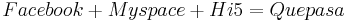

De: La Frikipedia, la enciclopedia extremadamente seria.
De: La Frikipedia, la enciclopedia extremadamente seria. De: La Frikipedia, la enciclopedia extremadamente seria.
| De la serie sitios web de ayer y de hoy: | |||
| Que | |||
| |||
| Dirección: | www.quepasa.com | ||
| Se dedica a: | Saludar a todos los latinos en el mundo(mundial) | ||
| País de origen: | México, México y México | ||
| Año de fundición: | Un dia despues de Facebook | ||
| Propietario: | Un latino (¿No es obio?) | ||
| Creador: | Otro Latino | ||
| Estado actual: | Off | ||
Que pasa es una pagina web pirateada inspirada en el Facebook, My space, Hi5, Etc etc
en la cual se pueden subir a los columpios fotos videos y demas
Quepasa Corporation, uno de los sitios de Internet en Español, fue fundada por el empresario tecnologico, filosofo con una carrera y maestria en la universidad de harvard "Changoleon", en .. bueno un dia despues de que se fundara "Facebook".
Matematica basica para saber como se a creado Que pasa 
Los juegos en quepasa son aburridos sacados del noentiendo 64 y de la empresa Hasecorp tales como el Buscaminas y el acompañado Solitario que no divierten ni a una rata agonizante en una trampa(Vease ratonera)
El chat es una pequeña ventana donde podras cagar comunicarte con otros esclavos usuario de quepasa.
Las comunidades son pequeñas paginas donde podras saludar mas gente latina, decir lo que piensas, todos te diran los que piensan y donde pueden armar bombas nucleares para acabar con el mundo
discutir lo mala que es la pagina.
| |
|---|
| 4chan • Anarcopedia • Argim.net • Asco de vida • Cleverbot • Cuánto Cabrón • Desmotiva2 • Desmotivaciones • EBay • EBuddy • Encyclopædia Dramatica • Facebook • Forocoches • Gamil • Gatitas Pop • Google Groups • GTAChile • Habbo Hotel • Hispachan • Hotel626 • Identi • IMDb • Inciclopedia • Instagram • La Súper Cafetera • Last.FM • Locüendo • Man red • Maristation • Media-Vida • Megaupload • Menéame • Metroflog • MySpace • Poringa! • Red social • RedTube • Rule 34 • Taringa! • Traductor Google • Tuenti • Tumblr • Twitter • U.N Cuyo • Uncyclopedia • Vagos.es • Vota mi cuerpo • What Da Faq • Wikia • Wikileaks • Wikipedia • Wikipediars • Windows Update • Xvideos • Yahoo • Yahoo! Respuestas • YouTube • |
Autor(es):